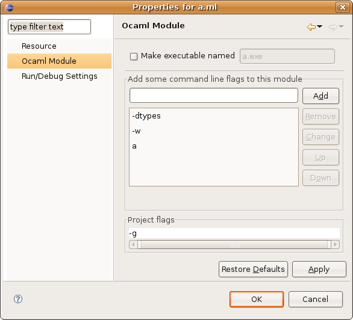
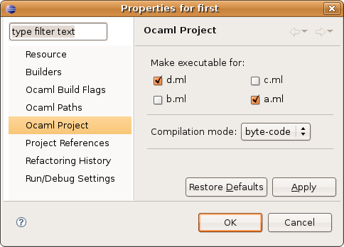

For OCaml Makefile Projects, the makefile determines how to create executables.
For Ocamlbuild Projects, specify a target (in the project properties) with the same base name as your module file, and with one of the following extensions:
The rest of this page explains how to create executables in OCaml Managed Projects.
To indicate that you want an executable to be created from a module file, right-click on this module file in the navigator view, select Properties, and select the Ocaml Module section. You should get this dialog box:

Here, click on the Make executable named checkbox, and give the executable a name in the associated text field.
There is also a way to choose multiple executables at once, by opening a project's properties (by right-clicking on it, and selecting Properties) and choosing the OCaml Project category:

Here, you can choose which modules must become executables, by clicking on each one's corresponding checkbox.
This property page is also used to set the compilation mode: you can choose between byte-code and native executables.
Note: In the navigator view, modules marked as executable will appear with the following icon: